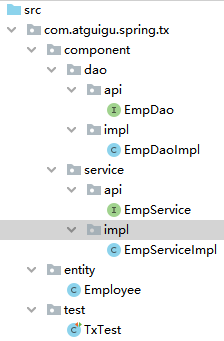
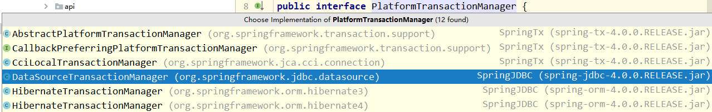
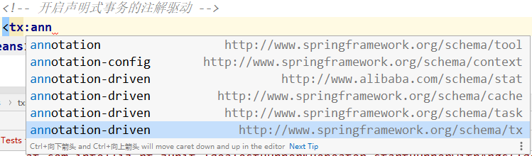
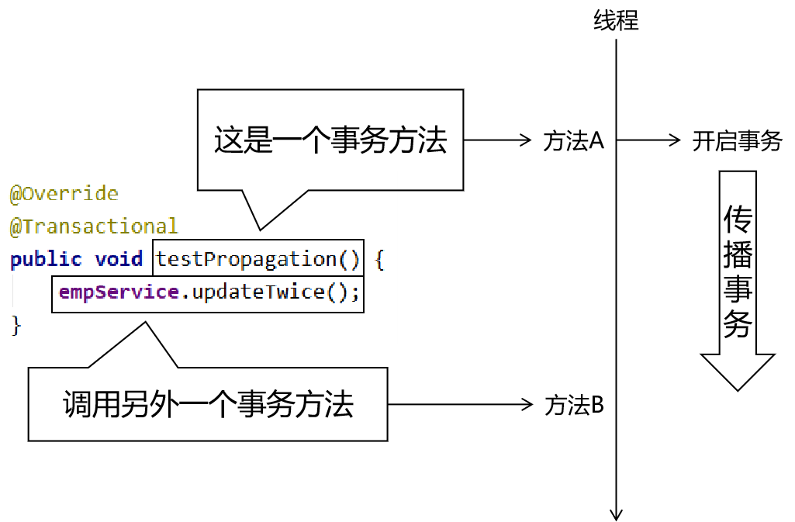
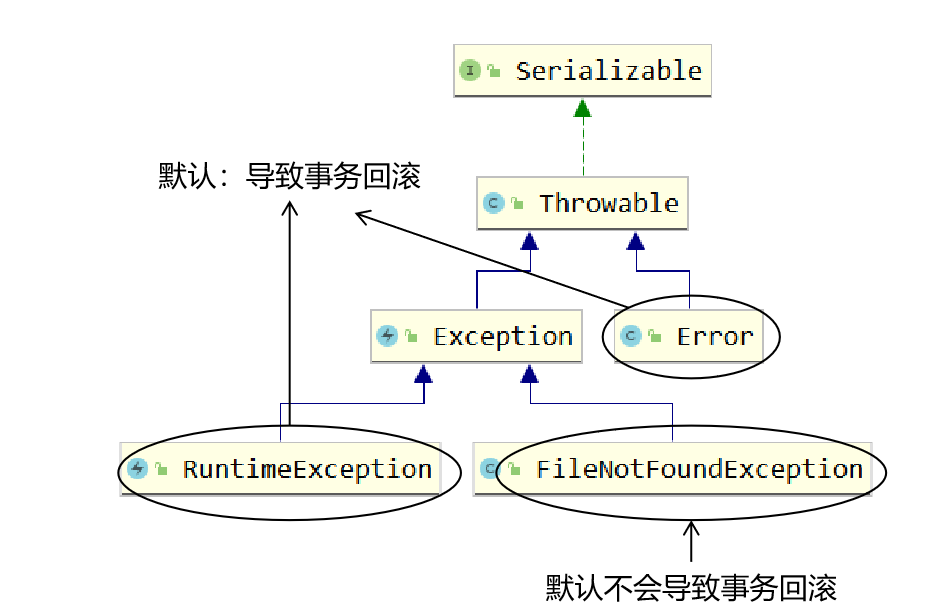
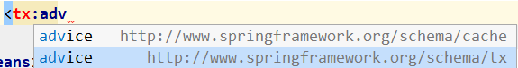

一、Spring和junit整合1、所需jar包2、创建Spring配置文件3、创建junit测试类二、JdbcTemplate1、定位2、介绍3、搭建环境①导入jar包②创建Spring配置文件③准备外部属性文件④junit测试类4、访问数据库①查询单个对象②查询List③查询单个值④增删改⑤批量操作5、封装Dao三、声明式事务概述0、事务回顾①事务和SQL语句的关系②事务的ACID属性③事务执行过程中的并发问题④事务的隔离级别1、IOC容器和后面这些内容的关系2、编程式事务3、声明式事务四、声明式事务具体操作1、搭建环境①导入jar包②准备配置文件[1]Spring的配置文件[2]jdbc.properties③其他组件④junit测试2、情景设定①EmpService方法②EmpDao方法3、加入基于注解的声明式事务①配置事务管理器②开启声明式事务的注解驱动③在需要事务的方法上使用注解4、查看事务管理器源码①提交操作②回滚操作5、@Transactional注解写在类上①写法②效果③特殊情况五、事务属性1、事务的传播行为①概念②设置传播行为的属性③测试代码④测试用例[1]情况1：测试REQUIRED[2]情况2：测试REQUIRES_NEW⑤实际开发中有可能的场景举例2、事务的隔离级别①测试方法说明②情景代码补充[1]EmpDao补充[2]EmpService补充③设置方式④测试方法3、事务回滚的异常4、只读属性5、超时属性六、基于XML的声明式事务1、搭建环境2、配置方式3、注意
commons-logging-1.1.3.jar hamcrest-core-1.3.jar junit-4.12.jar spring-aop-4.0.0.RELEASE.jar spring-beans-4.0.0.RELEASE.jar spring-context-4.0.0.RELEASE.jar spring-core-4.0.0.RELEASE.jar spring-expression-4.0.0.RELEASE.jar
spring-test-4.0.0.RELEASE.jar
<context:component-scan base-package="com.atguigu.spring.component"/>x// 指定SpringJunit运行器(SpringJUnit4ClassRunner.class)// 指定Spring的配置文件位置。如果有多个，那么在{}中可以使用逗号分开(value = {"classpath:applicationContext.xml"})public class JDBCTest { // IOC容器中的bean可以在这里直接注入 private EmpService empService; public void testSpringJunit() { System.out.println("empService = " + empService); }}我们学这个只是暂时用一下，为了学声明式事务才用一下JdbcTemplate。以后Spring整合Mybatis就不再使用JdbcTemplate了。
JdbcTemplate是Spring封装的一套访问数据库的简易操作模板。使用的感觉很像DBUtils。
commons-logging-1.1.3.jar druid-1.1.9.jar hamcrest-core-1.3.jar junit-4.12.jar mysql-connector-java-5.1.37-bin.jar spring-aop-4.0.0.RELEASE.jar spring-beans-4.0.0.RELEASE.jar spring-context-4.0.0.RELEASE.jar spring-core-4.0.0.RELEASE.jar spring-expression-4.0.0.RELEASE.jar spring-jdbc-4.0.0.RELEASE.jar spring-orm-4.0.0.RELEASE.jar spring-test-4.0.0.RELEASE.jar spring-tx-4.0.0.RELEASE.jar
xxxxxxxxxx <!-- 关联外部属性文件 --> <context:property-placeholder location="classpath:jdbc.properties"/> <!-- 配置数据源 --> <bean id="dataSource" class="com.alibaba.druid.pool.DruidDataSource"> <property name="driverClassName" value="${atguigu.dev.driver}"/> <property name="url" value="${atguigu.dev.url}"/> <property name="username" value="${atguigu.dev.username}"/> <property name="password" value="${atguigu.dev.password}"/> </bean> <!-- 配置JdbcTemplate --> <bean id="jdbcTemplate" class="org.springframework.jdbc.core.JdbcTemplate"> <!-- 装配数据源 --> <property name="dataSource" ref="dataSource"/> </bean>xxxxxxxxxxatguigu.dev.driver=com.mysql.jdbc.Driveratguigu.dev.url=jdbc:mysql://192.168.198.100:3306/mybatis0922?allowMultiQueries=trueatguigu.dev.username=rootatguigu.dev.password=atguiguxxxxxxxxxx// 指定SpringJunit运行器(SpringJUnit4ClassRunner.class)// 指定Spring的配置文件位置。如果有多个，那么在{}中可以使用逗号分开(value = {"classpath:applicationContext.xml"})public class JDBCTest { private JdbcTemplate jdbcTemplate; private DataSource dataSource; public void testConnection() throws SQLException { Connection connection = dataSource.getConnection(); System.out.println("connection = " + connection); }}xxxxxxxxxxpublic void testQueryOneObject() { // 1.准备访问数据库要使用的SQL语句 String sql = "SELECT emp_id,emp_name,emp_salary,emp_age,emp_gender FROM t_emp WHERE emp_id=?"; // 2.准备SQL的参数 Integer empId = 2; // 3.创建RowMapper对象 RowMapper<Employee> mapper = new BeanPropertyRowMapper(Employee.class); // 4.执行查询 Employee employee = jdbcTemplate.queryForObject(sql, mapper, empId); System.out.println("employee = " + employee);}xxxxxxxxxxpublic void testQueryList() { String sql = "SELECT emp_id,emp_name,emp_salary,emp_age,emp_gender FROM t_emp where emp_salary>?"; // 不管是查询单个对象还是List对象，都是使用RowMapper的方式指定数据库表和实体类的对应关系 RowMapper<Employee> mapper = new BeanPropertyRowMapper(Employee.class); // 由具体调用的方法决定返回的是单个对象还是List List<Employee> employeeList = jdbcTemplate.query(sql, mapper, 5000.00); for (Employee employee : employeeList) { System.out.println("employee = " + employee); }}xxxxxxxxxx public void testQuerySingleValue() { String sql = "select count(*) from t_emp"; // 传入Xxx.class这样的类型是用于查询单个值 Integer count = jdbcTemplate.queryForObject(sql, Integer.class); System.out.println("count = " + count); }xxxxxxxxxxpublic void testUpdate() { String sql = "UPDATE t_emp SET emp_name=? WHERE emp_id=?"; String empName = "UUU"; Integer empId = 2; int result = jdbcTemplate.update(sql, empName, empId); System.out.println("result = " + result);}一次性执行很多条SQL语句。为了提高效率，我们不是把SQL语句一条一条的发生给数据库，而是一次性发送很多条，让数据库批量执行。因为批量执行，能够节约网络传输所消耗的时间。
xxxxxxxxxx public void testBatch() { String sql = "UPDATE t_emp SET emp_name=? WHERE emp_id=?"; // 每一个Object数组封装一条SQL语句所需参数 // 存放到List集合中对应整个批量操作 List<Object[]> batchUpdateParam = new ArrayList<>(); for (int i = 0; i < 10; i++) { Object[] param = new Object[2]; param[0] = "TTT" + i; param[1] = i + 11; batchUpdateParam.add(param); } // 根据前面指定的SQL和参数执行批量操作 int[] result = jdbcTemplate.batchUpdate(sql, batchUpdateParam); for (int i = 0; i < result.length; i++) { int value = result[i]; System.out.println("value = " + value); } }封装DAO类的目的，是为了屏蔽调用jdbcTemplate方法的细节，让持久化层和业务逻辑层能够彼此分开，实现解耦。
最终实现的效果：业务逻辑层只需要提供要操作数据库的数据，而不必关心这些数据是如何通过调用jdbcTemplate的方法来操作数据库的。让业务逻辑层可以保持代码的纯正——仅包含也业务功能相关的代码。
为了让代码能够更好的实现解耦合，我们声明一个DAO的接口，按照面向接口编程的思路封装DAO类。
xxxxxxxxxxpublic interface IEmpDao { Emp selectEmpById(Integer empId); List<Emp> selectAll(); Integer selectEmpCount(); Integer updateEmployee(Emp emp); Integer deleteEmployeeById(Integer empId); Integer insertEmployee(Emp emp); }下面是接口的实现类：
xxxxxxxxxxpublic class EmpDaoImpl implements IEmpDao { private JdbcTemplate jdbcTemplate; public Emp selectEmpById(Integer empId) { String sql = "select emp_id,emp_name,emp_salary from t_emp where emp_id=?"; return jdbcTemplate.queryForObject(sql, new BeanPropertyRowMapper<>(Emp.class), empId); } public List<Emp> selectAll() { String sql = "select emp_id,emp_name,emp_salary from t_emp"; return jdbcTemplate.query(sql, new BeanPropertyRowMapper<>(Emp.class)); } public Integer selectEmpCount() { String sql = "select count(*) from t_emp"; return jdbcTemplate.queryForObject(sql, Integer.class); } public Integer updateEmployee(Emp emp) { String sql = "update t_emp set emp_name=?,emp_salary=? where emp_id=?"; return jdbcTemplate.update(sql, emp.getEmpName(), emp.getEmpSalary(), emp.getEmpId()); } public Integer deleteEmployeeById(Integer empId) { String sql = "delete from t_emp where emp_id=?"; return jdbcTemplate.update(sql, empId); } public Integer insertEmployee(Emp emp) { String sql = "insert into t_emp(emp_name,emp_salary) values(?,?)"; return jdbcTemplate.update(sql, emp.getEmpName(), emp.getEmpSalary()); }}注意：不要忘了配置自动扫描的包
xxxxxxxxxx<context:component-scan base-package="com.atguigu.spring.jdbc.component"/>一个事务中包含多条SQL语句。
脏读：
不可重复读：
幻读：
在Spring中干活，所有的东西肯定都必须在IOC容器中。如果某个对象不在IOC容器中，那么它就不归Spring管。
事务的相关操作完全由开发人员通过编码实现
xxxxxxxxxxtry{ // 开启事务（关闭事务的自动提交） connection.setAutoCommit(false); // 访问数据库的目标操作 empDao.updateXxx(); // 提交事务 connection.commit();}catch(Exception e){ // 回滚事务 connection.rollBack();}finally{ // 释放数据库连接 connection.close();}事务的控制交给Spring框架来管理，开发人员只需要在Spring框架的配置文件中声明你需要的功能即可。Spring框架底层基于AOP实现了声明式事务。
com.springsource.net.sf.cglib-2.2.0.jar com.springsource.org.aopalliance-1.0.0.jar com.springsource.org.aspectj.weaver-1.6.8.RELEASE.jar commons-logging-1.1.3.jar druid-1.1.9.jar hamcrest-core-1.3.jar junit-4.12.jar mysql-connector-java-5.1.37-bin.jar spring-aop-4.0.0.RELEASE.jar spring-aspects-4.0.0.RELEASE.jar spring-beans-4.0.0.RELEASE.jar spring-context-4.0.0.RELEASE.jar spring-core-4.0.0.RELEASE.jar spring-expression-4.0.0.RELEASE.jar spring-jdbc-4.0.0.RELEASE.jar spring-orm-4.0.0.RELEASE.jar spring-test-4.0.0.RELEASE.jar spring-tx-4.0.0.RELEASE.jar
xxxxxxxxxx<context:component-scan base-package="com.atguigu.spring.tx.component"/><!-- 导入外部属性文件 --><context:property-placeholder location="classpath:jdbc.properties" /><!-- 配置数据源 --><bean id="dataSource" class="com.alibaba.druid.pool.DruidDataSource"> <property name="driverClassName" value="${atguigu.dev.driver}"/> <property name="url" value="${atguigu.dev.url}"/> <property name="username" value="${atguigu.dev.username}"/> <property name="password" value="${atguigu.dev.password}"/></bean><!-- 配置JdbcTemplate --><bean id="jdbcTemplate" class="org.springframework.jdbc.core.JdbcTemplate"> <!-- 装配数据源 --> <property name="dataSource" ref="dataSource"/></bean>xxxxxxxxxxatguigu.dev.driver=com.mysql.jdbc.Driveratguigu.dev.url=jdbc:mysql://192.168.198.100:3306/mybatis0922?allowMultiQueries=trueatguigu.dev.username=rootatguigu.dev.password=atguigu
xxxxxxxxxx(SpringJUnit4ClassRunner.class)(value = {"classpath:applicationContext.xml"})public class TxTest { private EmpService empService; private DataSource dataSource; public void testConn() throws SQLException { Connection connection = dataSource.getConnection(); System.out.println("connection = " + connection); }}xxxxxxxxxx public void updateTwice() { // 1.准备第一次修改所需的数据 Integer empId = 5; String empName = "AAA"; // 2.执行第一次修改 empDao.updateEmpName(empId, empName); // 3.准备第二次修改所需的数据 empId = 6; empName = "BBB"; // 4.执行第二次修改 empDao.updateEmpName(empId, empName); }xxxxxxxxxx public void updateEmpName(Integer empId, String empName) { if (empId == 6) { throw new RuntimeException("我故意的"); } String sql = "update t_emp set emp_name=? where emp_id=?"; jdbcTemplate.update(sql, empName, empId); }
xxxxxxxxxx<!-- 配置事务管理器的bean --><bean id="transactionManager" class="org.springframework.jdbc.datasource.DataSourceTransactionManager"> <!-- 给事务管理器装配数据源 --> <property name="dataSource" ref="dataSource"/></bean>
注意：导入名称空间的时候，不要使用了错误的名称空间。
xxxxxxxxxx<!-- 开启声明式事务的注解驱动 --><!-- 在transaction-manager属性中指定前面配置的事务管理器的bean的id --><!-- transaction-manager属性的默认值是transactionManager，如果正好前面bean的id就是这个默认值，那么transaction-manager属性可以省略不配 --><tx:annotation-driven transaction-manager="transactionManager"/>xxxxxxxxxx public void updateTwice() { // 1.准备第一次修改所需的数据 Integer empId = 5; String empName = "AAA"; // 2.执行第一次修改 empDao.updateEmpName(empId, empName); // 3.准备第二次修改所需的数据 empId = 6; empName = "BBB"; // 4.执行第二次修改 empDao.updateEmpName(empId, empName); }org.springframework.jdbc.datasource.DataSourceTransactionManager
xxxxxxxxxxprotected void doCommit(DefaultTransactionStatus status) { DataSourceTransactionManager.DataSourceTransactionObject txObject = (DataSourceTransactionManager.DataSourceTransactionObject)status.getTransaction(); Connection con = txObject.getConnectionHolder().getConnection(); if (status.isDebug()) { this.logger.debug("Committing JDBC transaction on Connection [" + con + "]"); } try { con.commit(); } catch (SQLException var5) { throw new TransactionSystemException("Could not commit JDBC transaction", var5); }}xxxxxxxxxxprotected void doRollback(DefaultTransactionStatus status) { DataSourceTransactionManager.DataSourceTransactionObject txObject = (DataSourceTransactionManager.DataSourceTransactionObject)status.getTransaction(); Connection con = txObject.getConnectionHolder().getConnection(); if (status.isDebug()) { this.logger.debug("Rolling back JDBC transaction on Connection [" + con + "]"); } try { con.rollback(); } catch (SQLException var5) { throw new TransactionSystemException("Could not roll back JDBC transaction", var5); }}xxxxxxxxxxpublic class EmpServiceImpl implements EmpService {@Transactional注解写在类上之后相当于给类中的每一个方法都加了这个注解。包括注解中设置的属性，也会一起被作用到类中的方法。
如果类上@Transactional注解设置的属性，对具体的某个方法来说不合适，那么就可以在具体的这个方法上再声明一个@Transactional注解，设置自己需要的属性。此处遵循就近原则，离方法近的设置会覆盖离得远的设置。
xxxxxxxxxx(readOnly = true)public class EmpServiceImpl implements EmpService { private EmpDao empDao; (readOnly = false) public void updateTwice() { // 1.准备第一次修改所需的数据 Integer empId = 5; String empName = "AAA~~~"; // 2.执行第一次修改 empDao.updateEmpName(empId, empName); // 3.准备第二次修改所需的数据 empId = 6; empName = "BBB~~~"; // 4.执行第二次修改 empDao.updateEmpName(empId, empName); } public List<Employee> getAll() { return empDao.selectAll(); }}在上面的例子中，类上的@Transactional(readOnly = true)注解对getAll()方法有效，对updateTwice()方法无效。updateTwice()方法应用的是它自己的@Transactional(readOnly = false)。
事务方法A直接或间接调用使用方法B，事务方法A已经开启的事务如何传播给方法B来使用。

xxxxxxxxxx(readOnly = false, propagation = Propagation.REQUIRED)在@Transactional注解中使用propagation属性设置传播行为
在Propagation枚举类中封装可选的传播行为
REQUIRED：默认值。
REQUIRES_NEW：建议使用。
在EmpServiceImpl中增加了一个方法：updateSingle()
xxxxxxxxxx(readOnly = false)public void updateSingle() { Integer empId = 7; String empName = "CCC"; empDao.updateEmpName(empId, empName);}创建PropagationService接口
xxxxxxxxxxpublic interface PropagationService { void testPropagation();}创建PropagationServiceImpl类
xxxxxxxxxxpublic class PropagationServiceImpl implements PropagationService { private EmpService empService; public void testPropagation() { empService.updateTwice(); empService.updateSingle(); }}juni测试代码：
xxxxxxxxxxprivate PropagationService propagationService;public void testPropagation() { propagationService.testPropagation();}让empService.updateSingle()会抛出异常。
把updateTwice()和updateSingle()这两个方法上都使用下面的设置：
xxxxxxxxxx(readOnly = false, propagation = Propagation.REQUIRED)效果：两个方法的操作都没有生效，updateSingle()方法回滚，导致updateTwice()也一起被回滚，因为他们都在propagationService.testPropagation()方法开启的同一个事务内。
把updateTwice()和updateSingle()这两个方法上都使用下面的设置：
xxxxxxxxxx(readOnly = false, propagation = Propagation.REQUIRES_NEW)效果：
原因：上面两个方法各自运行在自己的事务中。
调用的目标方法带有事务，后面的AOP的通知方法也需要事务，它们是在同一个线程内的，存在事务传播行为。
xxxxxxxxxxpublic String selectEmpNameById(Integer empId) { String sql = "select emp_name from t_emp where emp_id=?"; return jdbcTemplate.queryForObject(sql, String.class, empId);}xxxxxxxxxx(isolation = Isolation.READ_UNCOMMITTED)public String getEmpNameById(Integer empId) { return empDao.selectEmpNameById(empId);}(readOnly = false, propagation = Propagation.REQUIRES_NEW, isolation = Isolation.READ_UNCOMMITTED)public void updateEmpName(Integer empId, String empName) { empDao.updateEmpName(empId, empName);}在@Transactional注解中，使用isolation属性设置事务的隔离级别。可选值包括
xxxxxxxxxxpublic enum Isolation { DEFAULT(-1), READ_UNCOMMITTED(1), READ_COMMITTED(2), REPEATABLE_READ(4), SERIALIZABLE(8); private final int value; private Isolation(int value) { this.value = value; } public int value() { return this.value; }}xxxxxxxxxxpublic void testReadEmpName() { String empName = empService.getEmpNameById(4); System.out.println("empName = " + empName);}public void testWriteEmpName() { Integer empId = 4; String empName = "UUU"; empService.updateEmpName(empId, empName);}在读和写方法中分别设置断点，并把两个方法都运行起来
在读操作实际执行前让程序停住
执行写操作
在写操作提交或回滚前执行读操作
查看读操作查询到的数据

设置方式
xxxxxxxxxx(readOnly = false, propagation = Propagation.REQUIRES_NEW, isolation = Isolation.READ_COMMITTED, rollbackFor = Exception.class)public void updateEmpName(Integer empId, String empName) { empDao.updateEmpName(empId, empName);}实际开发时通常也建议设置为根据Exception异常回滚。
一个事务如果是做查询操作，可以设置为只读，此时数据库可以针对查询操作来做优化，有利于提高性能。
xxxxxxxxxx(readOnly = true)如果是针对增删改方法设置只读属性，则会抛出下面异常：
xxxxxxxxxx表面的异常信息：TransientDataAccessResourceException: PreparedStatementCallback 根本原因：SQLException: Connection is read-only. Queries leading to data modification are not allowed（连接是只读的。查询导向数据的修改是不允许的。）实际开发时建议把查询操作设置为只读。
一个数据库操作有可能因为网络或死锁等问题卡住很长时间，从而导致数据库连接等资源一直处于被占用的状态。所以我们可以设置一个超时属性，让一个事务执行太长时间后，主动回滚。事务结束后把资源释放出来。
xxxxxxxxxx(readOnly = false, propagation = Propagation.REQUIRES_NEW, isolation = Isolation.READ_COMMITTED, rollbackFor = Exception.class, timeout = 10)public void updateEmpName(Integer empId, String empName) throws FileNotFoundException, InterruptedException { TimeUnit.SECONDS.sleep(15); empDao.updateEmpName(empId, empName); // 故意抛出一个编译时异常 // new FileInputStream("stupid.txt");}和前面基于注解的一样。
xxxxxxxxxx<!-- 配置基于XML的声明式事务 --><aop:config> <!-- 配置事务切面的切入点表达式 --> <aop:pointcut id="txPointCut" expression="execution(* *..*Service.*(..))"/> <!-- 将切入点表达式和事务通知关联起来 --> <aop:advisor advice-ref="txAdvice" pointcut-ref="txPointCut"/></aop:config><!-- 配置事务通知：包括对事务管理器的关联，还有事务属性 --><!-- 如果事务管理器的bean的id正好是transactionManager，则transaction-manager属性可以省略 --><tx:advice id="txAdvice" transaction-manager="transactionManager"> <!-- 给具体的事务方法配置事务属性 --> <tx:attributes> <!-- 指定具体的事务方法 --> <tx:method name="get*" read-only="true"/> <tx:method name="query*" read-only="true"/> <tx:method name="count*" read-only="true"/> <!-- 增删改方法 --> <tx:method name="update*" rollback-for="java.lang.Exception" propagation="REQUIRES_NEW"/> <tx:method name="insert*" rollback-for="java.lang.Exception" propagation="REQUIRES_NEW"/> <tx:method name="delete*" rollback-for="java.lang.Exception" propagation="REQUIRES_NEW"/> </tx:attributes></tx:advice>虽然切入点表达式已经定位到了所有需要事务的方法，但是在tx:attributes中还是必须配置事务属性。这两个条件缺一不可。缺少任何一个条件，方法都加不上事务。 另外，tx:advice导入时需要注意名称空间的值

赠送：整个后端学习的经纬体系
声明式事务脑图：
http://naotu.baidu.com/file/483f152491d6263855104dd07ed9729b?token=32a393984e17042c